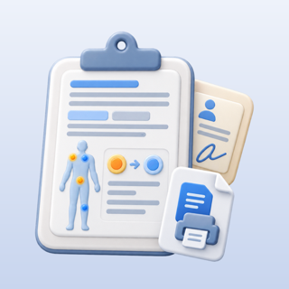
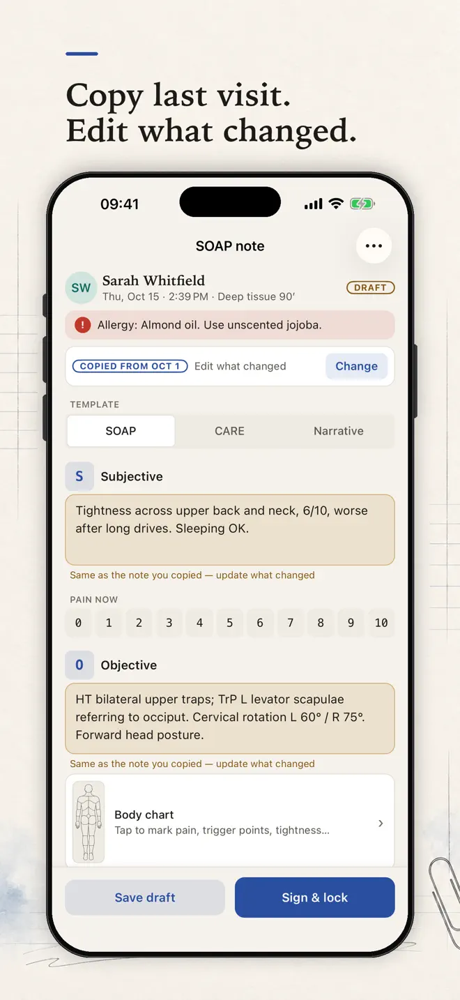
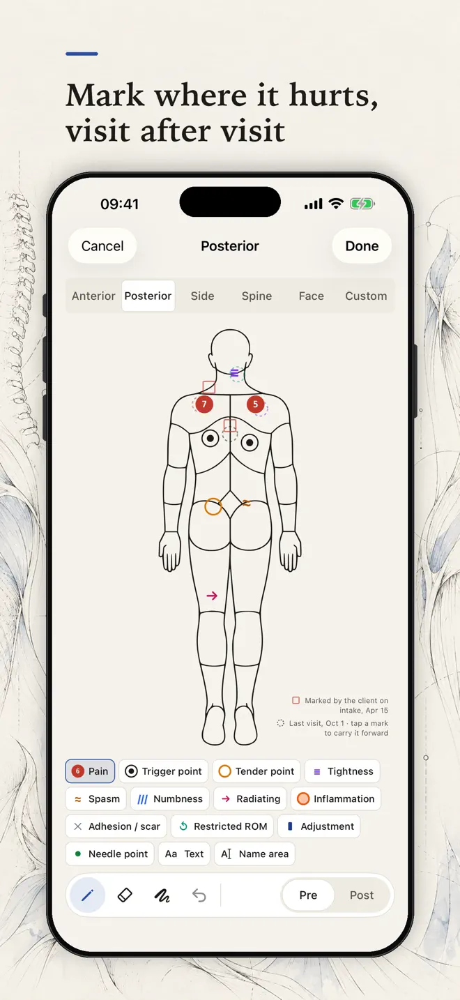
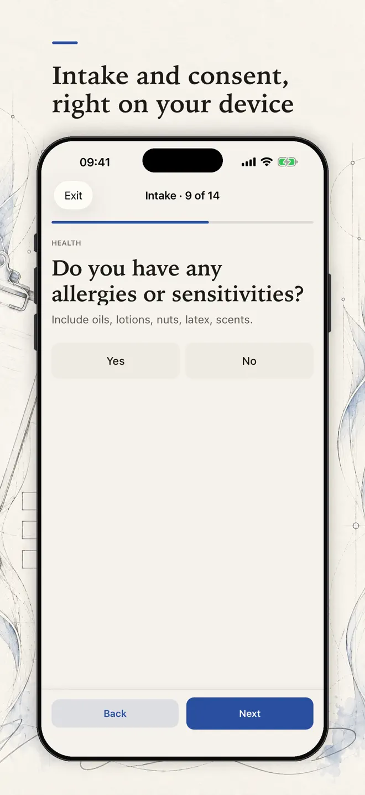
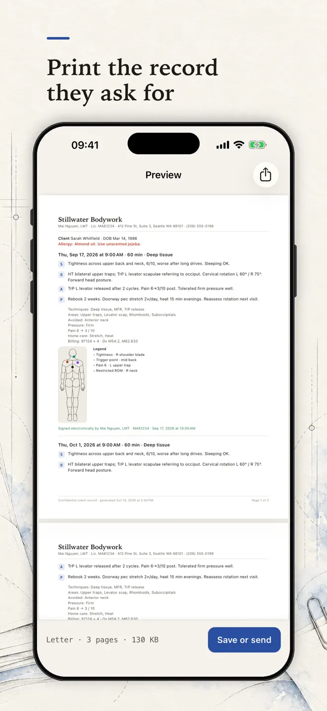

Write a SOAP note in two minutes between clients.
SOAP Notes is charting for therapists who work on their own: massage therapists, physical therapists and physios, chiropractors and acupuncturists. Chart the visit, mark where it hurts, collect intake and consent with a real signature, and print a clean record when a client, an insurer or a lawyer asks for one.
iPhone, iPad and Android · No account · Records stay on your device


What it does
A complete client record, kept by you
Notes in the format you use
SOAP, SOAP with goals, DAP, CARE or narrative, with prompts written for your profession. Copy last note in one tap, then edit what changed.
Quick phrases and chips
The words you type every day, your own abbreviations, and technique, area and home-care chips instead of typing.
Body chart
Front, back, spine and face views, or your own picture. Twelve symbols you can rename and recolor, with last visit's marks shown faintly for comparison.
Intake and consent
Health history forms that flag possible contraindications for you to review, and informed consent your client signs on your device.
Signed and locked
Signed notes are locked; later changes become dated addenda. ROM, manual muscle tests, PSFS, LEFS and a PART grid for chiropractors.
Print what they ask for
One note, a date range or the complete record as a PDF with your letterhead. Receipts and superbills with CPT and ICD-10 codes.
How it works
Chart the visit, then hand over the record
Mark where it hurts
Draw on the chart with your finger or a stylus, pinch to zoom. Everything prints onto the PDF exactly where you placed it.
Write the note
Start from last time, tap your phrases, and let Compose turn your chart marks and techniques into a first draft you edit.
Stay organized
A light schedule with reminders and one-tap rebooking, and search across clients, notes, addenda and form answers.


Your records
No account, no server — we never see your clients
- Records stay on your device. There is no account and no sign-up.
- Lock the app with Face ID or its own passcode.
- Encrypted backups you keep yourself — in iCloud on iPhone and iPad, or in a folder you pick on Android.
- Export everything as CSV or JSON at any time, with an optional password on PDFs.
SOAP Notes is a record-keeping tool. It does not give medical advice or diagnoses, and following your local record-keeping rules remains your responsibility.
Questions
Before you download
Who is SOAP Notes for?
Therapists who work on their own: massage therapists, physical therapists and physios, chiropractors and acupuncturists.
Where are my client records stored?
On your own device. There is no account and no server holding your records. You make encrypted backups that you keep yourself.
Which note formats are supported?
SOAP, SOAP with goals, DAP, CARE and narrative notes, with prompts written for your profession.
Can clients sign intake and consent forms?
Yes. Hand the device to your client in client mode; they fill in the health history and sign informed consent on screen.
Can I produce records for insurers?
Yes. Export one note, a date range or the complete record as a PDF with your letterhead, and create receipts and superbills with CPT and ICD-10 codes.
Which devices and languages does SOAP Notes support?
iPhone and iPad (iOS 17 or later) and Android. The app is in English.
- Made for
- Massage therapists, physical therapists, physiotherapists, chiropractors and acupuncturists in solo practice
- Platforms
- iPhone and iPad (iOS 17 or later) · Android
- Languages
- English
- Category
- Medical
- Developer
- Ho Van Dai
- Page updated